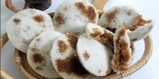

Bhapa Pitha

Description
Bhapa pitha is a popular sweet snack amongst
Bengali and Assamese people. It is delicate,
soft, and contain various forms of texture with
a fusion of rich flavour as you bite into the
pitha.
Ingredients
- Rice flour
- Grated coconut
- Jaggery
- Salt
- Warm water
Steps
- Dissolve salt in warm water and set aside.
- Mix rice flour water the water.
- Cover the rice flour with a towel for 20 minutes
- Take a fresh small coconut and shred.
- Run the rice flour through a strainer to obtain fine grain texture.
- Place the rice flour in a palm size mold cup and gently press down with a spoon.
- Add jaggery bits and shredded coconut on top.
- Gently cover the jaggery and coconut with more rice flour on top and
then wrap it with a wet cheese cloth.
- Place the wrapped pitha on top of the pot with water that
has been sealed with a cheese cloth for indirect heat.
- Cover with a lid and cook the pitha for about 3 minutes until delicately soft.
- Remove from heat and repeat the steps until all ingredients have been used up.
- Serve pitha warm or cold as desired